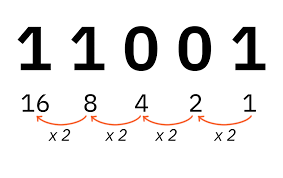

Binair stelsel
Het binair stelsel bestaat uit nullen en eenen (0 & 1). Elk getal noemen we een bit, 8 bits vormt een byte.
ASCII
Met deze 25 kunnen we ook een letter maken, dit doen we met ASCII (American Standard Code for Information Interchange). De standaard ASCII-tabel bestaat uit de 94 zichtbare tekens (hoofdletters en kleine letters, cijfers, leestekens en enkele andere symbolen), de spatie, en 33 stuurcodes. De stuurcodes representeren geen zichtbare tekens, maar zijn opdrachten aan uitvoerapparaten of geven informatie over de gegevens die verstuurd worden.